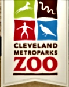
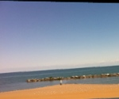

4101 Fulton Parkway
Cleveland, Ohio 44144
Phone:216-635-3200
Cleveland Metroparks
The Cleveland Metropark system is the oldest park district in Ohio. The Parks concept was conceived by an engineer by the name of William Stinchcomb. After years of initiative the park was officially districted in 1912. It wasn't until 1916 after the Cuyahoga County Commissioners were able to appropriate money to the park system. This required state law changes. Originally started with donations of land in Rocky River Valley the park now spans throughout the Greater Cleveland area. In 1917 a bill passed to insure the conservation of the park systems. A work in progress the almost 10,000 acres of land hopes to continue its evolution to connect all the reservations together. The park system offers rich eductional programs for young and old. It also is involved in research and conservation efforts. The park system offers multiple entertainment events throughout the year. The parks also offer multiple recreational activities including: Archery, biking, boating, golf, fishing (including ice fishing), horseback riding, picnicking, sledding and snowboarding, swimming. See website for complete listing and locations.  Cleveland Metroparks Zoo
3900 Wildlife Way
Cleveland, Ohio 44109
Phone:216-661-6500
Cleveland Metroparks Zoo
The Cleveland Zoo is part of the beautiful metro park system. It opened in 1882 in University Circle near Wade Oval with donated land from Jeptha H. Wade. Mr. Wade donated 73 acres of land to the City of Cleveland. The Zoo moved to its current location in 1907. In 1959 the zoo became managed by the Cleveland Zoological Society. After a few setbacks early on the zoo recovered and continued its expansion. In 1968 the zoo was transferred from the City of Cleveland to the Cleveland Metropolitan Park District and in 1975 came under the managment of the Cleveland Metroparks. It is open year round and features several areas of interest including: Australian Adventure, The Northern Trek, African Savanna, The Primate, Cat and Aquatic exhibits. Visit the zoo's website for complete listing. The zoo features one of the largest primate exhibits in North America. The Zoo was founded in 1882 and spans over 183 acres. One popular features of the Zoo is the RainForest exhibit which opened in 1992. Many educational and outreach programs are offered at the Zoo throughout the year.  Headlands Beach State Park "Mentor Headlands"
9601 Headlands Road
Mentor, Ohio 44060
Phone:440-257-3649
Mentor Headlands
Mentor Headland on the shores of Lake Erie includes the Headlands Dunes State Nature Preserve, hiking trails, a playground and a mile long public beach. It is the largest sand beach in Ohio. The beach was opened in 1953 but was called Painesville Beach State Park at that time. It was not until 1955 that it was changed to Headlands Beach. It attracts over a million visitors a year.